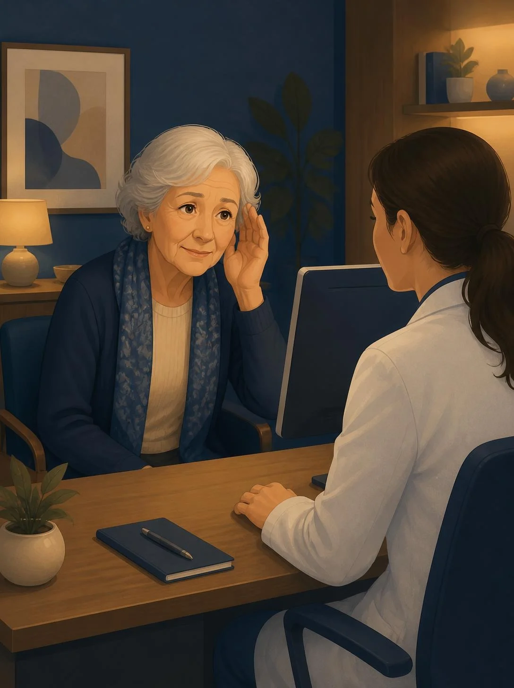

AI scribes record what was said. Dr.Listner flags what was never asked, answered or understood — and hands the patient a plain-language plan they can actually follow.

Illustration · synthetic scenario
Ambient scribes document the conversation. Nobody checks the conversation itself — and nobody writes for the patient.
US adults is misdiagnosed in outpatient care each year.
National Academies, 2015of adults 75+ live with disabling hearing loss.
NIDCD, NIHof US adults have proficient health literacy.
NCES, 2003 surveyof medical information is forgotten immediately.
Kessels, JRSM, 2003Live captions from the microphone with doctor and patient labels. Only chart and comprehension badges appear mid-visit — no pop-ups, no alert fatigue.
Chart, concern, checklist and comprehension agents read each turn against a published guideline. A verifier drops any flag without real evidence.
One end-of-visit gaps list for the clinician, and a plain-language plan with read-aloud for the patient.
Checklist items — onset, radiation, sweating, family history — with no matching question.
A worry the patient voiced that the clinician never addressed.
What the patient says conflicts with the record.
The patient did not hear or understand, and no repeat, rephrase or teach-back followed.
Run the scripted chest-pain visit, or speak live with doctor and patient labels.
▷ Launch Console